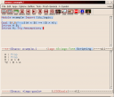
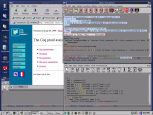
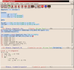
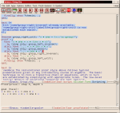
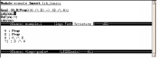

Here are some screenshots of Proof General 3.0 running with
different theorem provers. To see the full-size version
of a picture, click on its thumbnail.
|

|
Building a simple proof in LEGO with proof-by-pointing.
The top half of the window displays the proof script.
The bottom displays the output from LEGO at each
stage of the proof. Here, it shows
the current subgoals to be solved.
The part of the proof already processed by LEGO
has a blue background.
Clicking on terms in the subgoals list generates
commands which are added to the proof script.
|
|

|
Coq Proof General running in multiple frame mode,
full screen shot (1024x768).
There are separate windows on the screen
for the script, goals, and response buffers.
In this picture, you can see Proof General's
indication that Coq is processing the
induction step, because the background of
the proof step is pink. It will become
blue when Coq finishes that step.
|
|

|
Replaying a domain theory proof in Isabelle's HOLCF logic.
In Isabelle, theory files as well as ML files are coloured.
Proof General has some functions for processing and
undoing theory files, but most operations it provides
are for writing proof scripts in ML files.
Isabelle supports input and output in tokens which
display as symbols using the
X-Symbol
package in conjunction with Proof General.
Here you can see some symbols in Isabelle's output.
|
|

|
Replaying a proof in Isar, Isabelle's new proof language
developed by Markus Wenzel.
|
|

|
LEGO Proof General running in plain console mode.
This shows that you can run Proof General even if sometimes
you need to use a plain tty or xterminal. Of course, the
graphical features are reduced!
|
{kind=link}
{kind=link}
{kind=link}
{kind=link}
{kind=link}